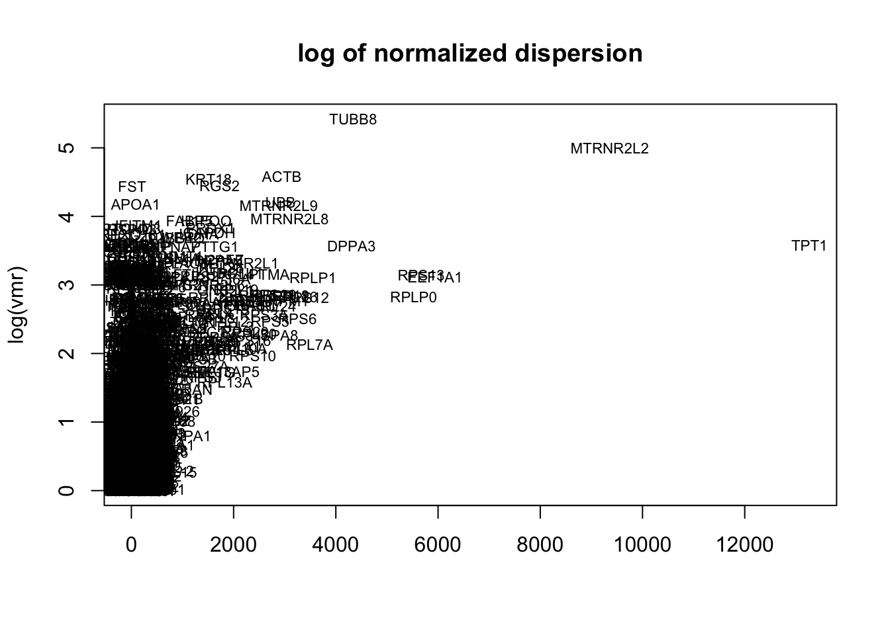
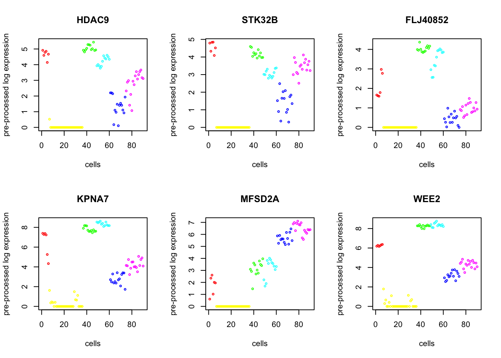

Smart-seq Example2
Last updated: 2018-09-14
workflowr checks: (Click a bullet for more information)-
✔ R Markdown file: up-to-date
Great! Since the R Markdown file has been committed to the Git repository, you know the exact version of the code that produced these results.
-
✔ Environment: empty
Great job! The global environment was empty. Objects defined in the global environment can affect the analysis in your R Markdown file in unknown ways. For reproduciblity it’s best to always run the code in an empty environment.
-
✔ Seed:
set.seed(20180618)The command
set.seed(20180618)was run prior to running the code in the R Markdown file. Setting a seed ensures that any results that rely on randomness, e.g. subsampling or permutations, are reproducible. -
✔ Session information: recorded
Great job! Recording the operating system, R version, and package versions is critical for reproducibility.
-
Great! You are using Git for version control. Tracking code development and connecting the code version to the results is critical for reproducibility. The version displayed above was the version of the Git repository at the time these results were generated.✔ Repository version: 86bd1c0
Note that you need to be careful to ensure that all relevant files for the analysis have been committed to Git prior to generating the results (you can usewflow_publishorwflow_git_commit). workflowr only checks the R Markdown file, but you know if there are other scripts or data files that it depends on. Below is the status of the Git repository when the results were generated:
Note that any generated files, e.g. HTML, png, CSS, etc., are not included in this status report because it is ok for generated content to have uncommitted changes.Ignored files: Ignored: .Rhistory Ignored: .Rproj.user/ Ignored: R/.Rhistory Ignored: analysis/.Rhistory Ignored: analysis/pipeline/.Rhistory Untracked files: Untracked: ..gif Untracked: .DS_Store Untracked: R/.DS_Store Untracked: analysis/.DS_Store Untracked: analysis/normalization_test.R Untracked: analysis/pipeline/0_dropseq/ Untracked: analysis/pipeline/1_10X/ Untracked: analysis/pipeline/2_zeisel/ Untracked: analysis/pipeline/3_smallsets/ Untracked: analysis/slsl_10x.Rdata Untracked: analysis/slsl_dropseq.Rdata Untracked: analysis/writeup/bibliography.bib Untracked: analysis/writeup/draft1.aux Untracked: analysis/writeup/draft1.bbl Untracked: analysis/writeup/draft1.blg Untracked: analysis/writeup/draft1.log Untracked: analysis/writeup/draft1.out Untracked: analysis/writeup/draft1.pdf Untracked: analysis/writeup/draft1.synctex.gz Untracked: analysis/writeup/draft1.tex Untracked: analysis/writeup/jabbrv-ltwa-all.ldf Untracked: analysis/writeup/jabbrv-ltwa-en.ldf Untracked: analysis/writeup/jabbrv.sty Untracked: analysis/writeup/naturemag-doi.bst Untracked: analysis/writeup/wlscirep.cls Untracked: data/unnecessary_in_building/ Untracked: docs/figure/10x_labeled.Rmd/ Untracked: docs/figure/example_10x.Rmd/.DS_Store Untracked: docs/figure/large.Rmd/ Untracked: dropseq_heatmap.pdf Untracked: man/correct_detection_rate.Rd Unstaged changes: Modified: NAMESPACE Modified: R/SLSL.R Modified: R/correct_detection_rate.R Modified: R/find_markers.R Modified: analysis/pipeline/.DS_Store Modified: analysis/writeup/.DS_Store Modified: data/.DS_Store Modified: docs/figure/.DS_Store Deleted: man/correct.detection.rate.Rd
Expand here to see past versions:
| File | Version | Author | Date | Message |
|---|---|---|---|---|
| Rmd | 86bd1c0 | tk382 | 2018-09-14 | wflow_publish(c(“analysis/_site.yml“,”analysis/large.Rmd“,”analysis/small.Rmd“), republish |
Read Data : Yan
load('data/Yan.rda')
X = as.matrix(yan)
genenames = rownames(X)
truelabel = as.numeric(as.factor(ann$cell_type1))
numClust = length(unique(truelabel))Quality Control and Cell Filtering
summary = explore_data(X, genenames)Gene Filtering
disp = plot_dispersion(X = X,
genenames = genenames,
bins=NA,
median = TRUE)
X = gene_filter(X, genenames, disp,
mean.thresh=c(-Inf, 4000),
dispersion.thresh = c(0.5, Inf))
genenames = X$genenames
X = X$XNormalization and Bias Correction
X = quantile_normalize(X)
cd = correct_detection_rate(as.matrix(X), det.rate = colMeans(X>0)/nrow(X))
Run the algorithm
Run SLSL on the log.cpm matrix.
out = SLSL(X, numClust = numClust)adj.rand.index(out$result, truelabel)[1] 0.8954618Analyze : Differentially Expressed Genes
degenes = de_genes(X, genenames, out$result, top.n=100, plot=6)
head(degenes) de_genes log10p
1 HDAC9 16.36138
2 STK32B 16.28383
3 FLJ40852 16.19759
4 KPNA7 16.10733
5 MFSD2A 16.10030
6 WEE2 16.02111Markers for Each Cluster
bio.markers = find_markers(X, genenames, out$result, out$tsne$Y, top.n = 50, plot.n=3)
bio.markers$plots[[1]]head(bio.markers$markers[[1]]) clust1_genenames clust1_log10p
1 PDK4 17.15950
2 NEUROD1 15.94980
3 C11orf96 13.93428
4 FLJ37201 12.38675
5 HOXD11 12.18412
6 PCDH10 11.56774bio.markers$plots[[2]]head(bio.markers$markers[[2]]) clust2_genenames clust2_log10p
1 C19orf33 19.08016
2 C10orf125 18.53046
3 KRT19 18.03959
4 CRIP1 18.02379
5 C9orf140 17.76193
6 BIN1 17.53935bio.markers$plots[[3]]head(bio.markers$markers[[3]]) clust3_genenames clust3_log10p
1 DUX4L2 12.67983
2 DUX4 11.99765
3 DUX4L3 11.13193
4 USP17L2 10.71518
5 DUX4L5 10.49148
6 LOC100127888 10.40254Session information
sessionInfo()R version 3.5.1 (2018-07-02)
Platform: x86_64-apple-darwin15.6.0 (64-bit)
Running under: macOS Sierra 10.12.5
Matrix products: default
BLAS: /Library/Frameworks/R.framework/Versions/3.5/Resources/lib/libRblas.0.dylib
LAPACK: /Library/Frameworks/R.framework/Versions/3.5/Resources/lib/libRlapack.dylib
locale:
[1] en_US.UTF-8/en_US.UTF-8/en_US.UTF-8/C/en_US.UTF-8/en_US.UTF-8
attached base packages:
[1] parallel stats graphics grDevices utils datasets methods
[8] base
other attached packages:
[1] bindrcpp_0.2.2 gridExtra_2.3
[3] gdata_2.18.0 stargazer_5.2.2
[5] abind_1.4-5 broom_0.5.0
[7] gplots_3.0.1 diceR_0.5.1
[9] Rtsne_0.13 igraph_1.2.2
[11] scatterplot3d_0.3-41 pracma_2.1.4
[13] fossil_0.3.7 shapefiles_0.7
[15] foreign_0.8-71 maps_3.3.0
[17] sp_1.3-1 caret_6.0-80
[19] lattice_0.20-35 reshape_0.8.7
[21] dplyr_0.7.6 ggplot2_3.0.0
[23] irlba_2.3.2 Matrix_1.2-14
[25] quadprog_1.5-5 inline_0.3.15
[27] matrixStats_0.54.0 SCNoisyClustering_0.1.0
loaded via a namespace (and not attached):
[1] nlme_3.1-137 bitops_1.0-6
[3] lubridate_1.7.4 dimRed_0.1.0
[5] rprojroot_1.3-2 tools_3.5.1
[7] backports_1.1.2 R6_2.2.2
[9] KernSmooth_2.23-15 rpart_4.1-13
[11] lazyeval_0.2.1 colorspace_1.3-2
[13] nnet_7.3-12 withr_2.1.2
[15] tidyselect_0.2.4 compiler_3.5.1
[17] git2r_0.23.0 labeling_0.3
[19] caTools_1.17.1.1 scales_0.5.0
[21] sfsmisc_1.1-2 DEoptimR_1.0-8
[23] robustbase_0.93-2 stringr_1.3.1
[25] digest_0.6.15 rmarkdown_1.10
[27] R.utils_2.6.0 pkgconfig_2.0.1
[29] htmltools_0.3.6 rlang_0.2.1
[31] ddalpha_1.3.4 bindr_0.1.1
[33] gtools_3.8.1 mclust_5.4.1
[35] ModelMetrics_1.1.0 R.oo_1.22.0
[37] magrittr_1.5 Rcpp_0.12.18
[39] munsell_0.5.0 R.methodsS3_1.7.1
[41] stringi_1.2.4 whisker_0.3-2
[43] yaml_2.2.0 MASS_7.3-50
[45] plyr_1.8.4 recipes_0.1.3
[47] grid_3.5.1 pls_2.6-0
[49] crayon_1.3.4 splines_3.5.1
[51] knitr_1.20 pillar_1.3.0
[53] reshape2_1.4.3 codetools_0.2-15
[55] stats4_3.5.1 CVST_0.2-2
[57] magic_1.5-8 glue_1.3.0
[59] evaluate_0.11 RcppArmadillo_0.8.600.0.0
[61] data.table_1.11.4 foreach_1.4.4
[63] gtable_0.2.0 purrr_0.2.5
[65] tidyr_0.8.1 kernlab_0.9-26
[67] assertthat_0.2.0 DRR_0.0.3
[69] gower_0.1.2 prodlim_2018.04.18
[71] class_7.3-14 survival_2.42-6
[73] geometry_0.3-6 timeDate_3043.102
[75] RcppRoll_0.3.0 tibble_1.4.2
[77] iterators_1.0.10 workflowr_1.1.1
[79] lava_1.6.2 ipred_0.9-6 This reproducible R Markdown analysis was created with workflowr 1.1.1